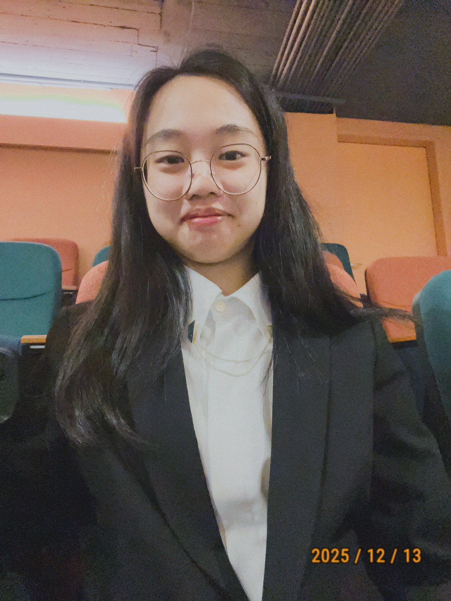
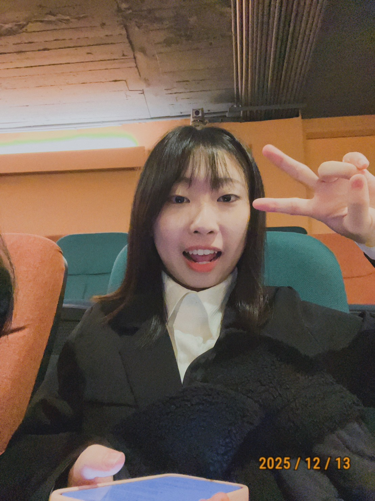
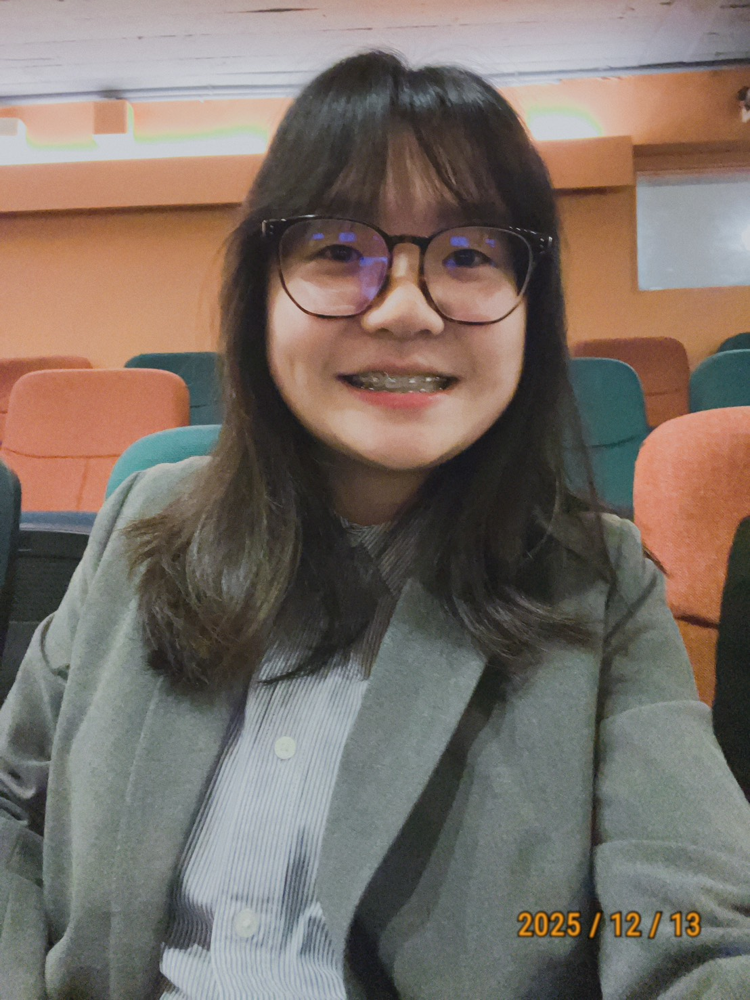
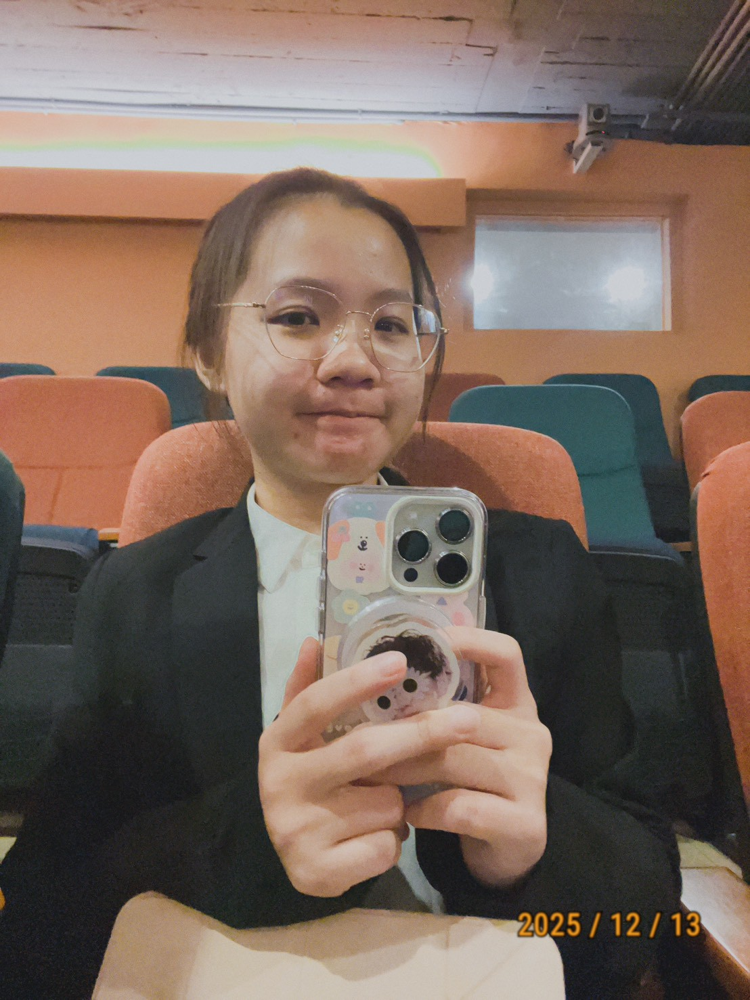
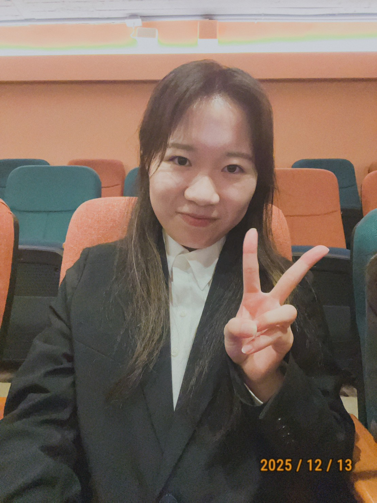
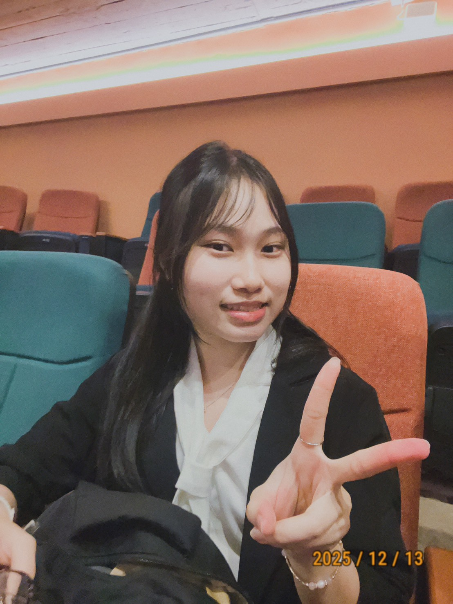

組員
在本次專題中，主要負責機器學習相關的部分，包含資料整理與模型建構。為了讓模型更貼近實際情況，我們也實際走訪賣場進行田野調查，蒐集即期食品的價格、效期與折扣資訊等，在這過程中也讓我了解到資料來源對模型結果的重要性。在機器學習模型實作過程中，有利用 AI 工具輔助理解程式與調整參數，雖然不是從零開始手刻演算法，但在反覆嘗試與修正中，逐漸理解機器學習的邏輯。這次經驗讓我認知到，善用 AI 本身也是一種學習能力，而是否能理解與判斷其結果是否合理，是我認為這是一個學習到歷練。

組員
這次的專題，從一開始的主題發想、前置作業規劃與系統設計架構圖的繪製，到中期資料的蒐集以及系統的實際開發，都需要與組員之間密切溝通與討論。在這個過程中，我非常感謝組員們在我遇到困難或犯錯時，總是能夠即時且耐心地給予協助與建議，讓我能順利克服問題並持續學習與成長。透過這次的專題合作，我不僅學到了許多實務與技術相關的知識，也深刻體會到團隊合作的重要性，謝謝團隊中的每一位成員。

組員
這次專題以影像辨識與機器學習為核心挑戰，從資料整理到模型調整，每一步都讓我學到許多實作經驗。更重要的是，能與組員們一起討論、協作，將每次測試與調整的成果累積成團隊的知識，讓整個專題過程充滿收穫與溫暖。感謝大家的努力與陪伴，一起完成了這個專案。

組員
這次的專題所使用到的技術對我來說都不是很熟悉，需要大量的資料去做模型的訓練，因此前期作業會需要一直去收集資料，在這次的專題我參與了 AI 模型測試與資料標註，也讓我學到專案管理的重要性，也很謝謝我的夥伴們在我不知道該怎麼執行下一步的時候來輔助我。

組員
這次專題讓我更理解，把想法做成可用的成果，需要顧到整體流程與許多細節。而團隊合作最重要的是，大家對目標與規格有一致的理解，才能在需求變動時維持穩定的進度與品質。在我的分工上，我主要負責介面設計與前端內容，也參與市場分析，並協助影片與海報製作。這些工作讓我更清楚，如何把資訊整理成能被理解與使用的呈現方式。我也很感謝組員在過程中願意一起討論、互相支援，讓我們能一步步把作品完善，這段合作對我來說很有意義。

組員
這個專案不僅打造了一個能幫助消費者省錢、同時減少食物浪費的實用應用，更是一段深刻的團隊學習旅程。它大幅提升了我們的技術能力，也讓我們在真實的專案環境中體會到團隊合作與溝通的重要性。當看到大家的共同努力，最終孕育出一個一致且功能完善的產品，這讓我們深刻感受到一起走過的過程，比結果本身更珍貴。 謝謝每一位夥伴。